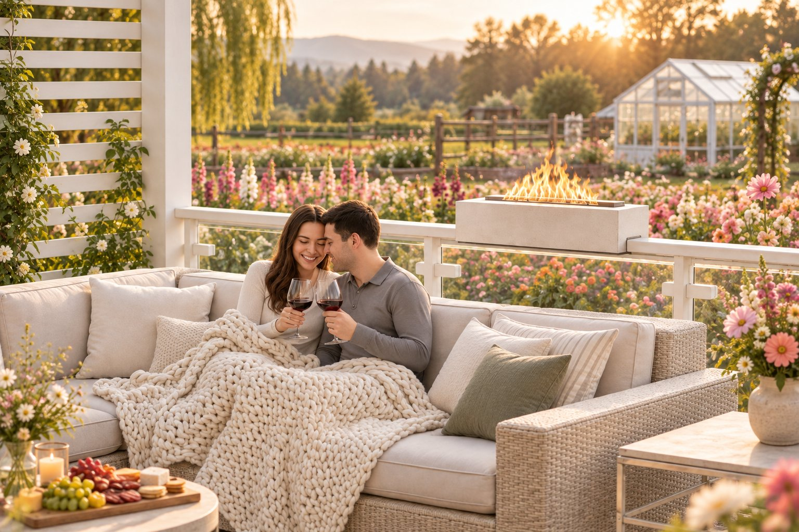
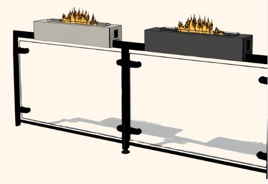
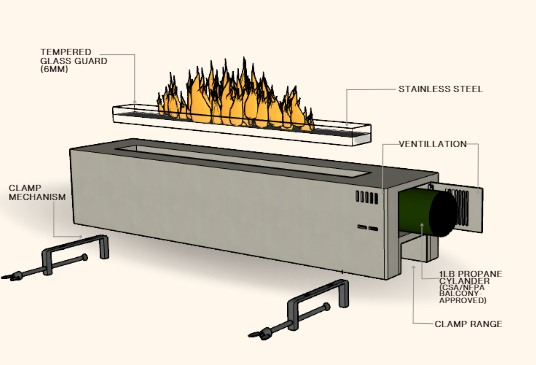
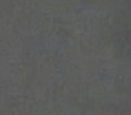
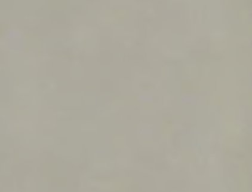
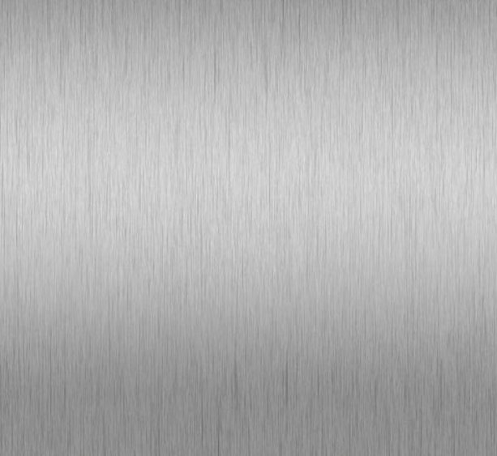
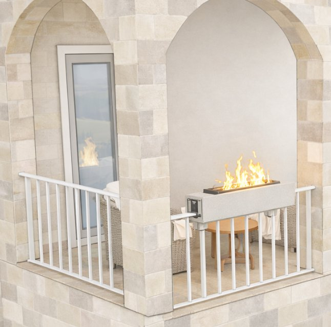
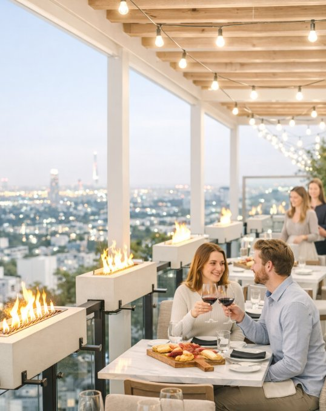
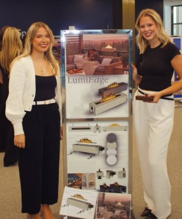

Project 01 · Snapdragon
LumiEdge
Reimagining Outdoor Living
Runner-Up · Napoleon Design Competition
- Type
- Product Design / Competition Concept
- Recognition
- Runner-Up, Napoleon Design Competition
- Date
- Collaboration
- Addison Ross
- My Role
- Lead 3D Modelling + Rendering
- Software
- SketchUp, Enscape, AI-Assisted Visualization

Overview
LumiEdge reimagines outdoor fire features for compact balconies, terraces, and hospitality environments. Designed to integrate with railing systems, its streamlined architectural form introduces warmth and atmosphere while preserving valuable outdoor space.
RecognitionRunner-Up, Napoleon Design Competition
Design development
The concept explores GFRC concrete, tempered glass, stainless steel components, railing attachments, ventilation, and an enclosed propane system. Multiple material finishes and installation scenarios demonstrate the product’s adaptability.

Technical development

Materials & finishes
-

Midnight Ash -

Sandstone -

Stainless Steel - Tempered Glass
Final visualizations


My contribution
LumiEdge was developed in collaboration with Addison Ross. I led the 3D modelling in SketchUp and created the final Enscape renderings. AI-assisted enhancements refined the lighting, atmosphere, and presentation quality.

Looking Back
When we began developing LumiEdge, we wanted to create something that filled a gap rather than simply reimagine an existing fire feature. Looking at small Toronto balconies, we noticed how traditional fire pits and heaters often took up valuable space without offering the same atmosphere as an open flame. Inspired by outdoor torches, we explored integrating a larger fire feature directly into the railing.
Bringing this concept to life through 3D modelling challenged us to think beyond aesthetics, considering materials, heat, durability and the possibility of extending outdoor living into the colder Canadian months. Looking back, we would love to take LumiEdge further through physical prototyping and testing to better understand its performance and practical installation.